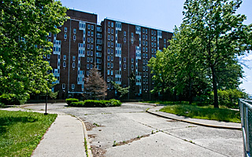
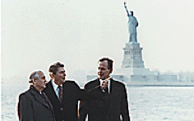

The Coast Guard had a rich 30-year stay on the island, a time marked by bold missions from its base in New York Harbor. Cutters based on the island patrolled as close as nearby Liberty Island, and as far as Vietnam. However, practically every trace of the service's time on the island will be wiped clean away when the new public park is developed over the next two decades. The Coast Guard undertook a large building plan to house its service members and their dependents; every single one of the buildings is scheduled for demolition, or has been razed already. One reminder of the service is the three docks it left in Buttermilk Channel: Yankee, Tango and Lima (if you want to know why they have these names, just look at an aerial photo of the waterway and note the shape of the docks).
The Coast Guard had a different mission from the Army when it moved onto the island. Its roots go back to 1790 and Founding Father Alexander Hamilton, when Congress authorized the construction of ten vessels to enforce tariff and trade laws and to prevent smuggling. It was known as the Revenue Service until 1915. Under an act of Congress when the Revenue Cutter Service merged with the Life-Saving Service, the modern Coast Guard was born. By the mid-1960s, the Coast Guard, the fifth armed service in the United States, was extremely busy. Its duties on Governors Island included patrolling, port safety, enforcing marine violation laws, search and rescue, buoy maintenance and training. At the height of Coast Guard involvement on the island more than 6,000 people lived and worked on it.
The service undertook its first major operation the summer it moved to Governors Island. On June 16, 1966, the British freighter Alva Cape, carrying 4.2 million gallons of naptha, and the tanker Texaco Massachusetts collided in Kill Van Kull, between Staten Island and Bayonne. Thirty-four crewmen perished in the explosion; Coast Guard cutters raced to the scene along with the New York Fire Department. This was the first of many dramatic rescues the service would undertake in the next three decades from the island. On Sept. 21, 1989, Coast Guard crews from Governors Island rescued 61 survivors of U.S. Air Flight 5050 after it skidded off a runway of LaGuardia Airport and into Bowery Bay, killing two passengers. But the biggest story of the era occurred on June 6, 1993, when a 150-foot tramp steamer, the Golden Venture, ran aground on Rockaway Beach, Queens, with some 300 illegal Chinese immigrants onboard. The men and women attempted to swim more than 200 yards in the rough surf. Ten drowned, six vanished and the rest were rescued by the Coast Guard and local agencies.
When the service moved onto the island, it became the largest Coast Guard base in the world. The service quickly started remaking the island into its own small town for the "Coasties" stationed on Governors Island with their families. Within two years there was a new 18-lane bowling alley and enlisted mens' club. This was followed by a Burger King, softball fields, tennis courts, commissary, hair salon and pizza parlor. A new school was built in 1971 and Super 8 Motel in 1986. But what the service excelled at was in putting up housing.

The Cunningham cost $5.5 million to build in 1971.
The first large development was Brick Village, the low apartment homes just south of Liggett Hall. This was followed by the 11-story Cunningham Apartments. Dedicated in 1971 by the assistant commandant, Vice Admiral T. R. Sargent, the apartments were named for Boatswain's Mate Second Class Earl Cunningham who gave his life on Feb. 8, 1936, attempting to save two fishermen on Lake Michigan. The apartments were built to house 160 families. This was possibly the best real estate value in the city: a four-bedroom apartment, with sweeping views of the harbor, "rented" for $121 (about $520 today) a month. Today, the Cunningham is used by the FDNY to practice firefighting techniques; ultimately it will be razed by the Trust For Governors Island.
In 1965 the Coast Guard and the U.S. Navy agreed on the deployment of ships to support Operation Market Time in Vietnam. The Coast Guard sent its boats and crews overseas to patrol the 1,200-mile coastline of South Vietnam and assist the American involvement in the war. In 1970 the 378-foot Morgenthau, a Hamilton-class high-endurance cutter, was deployed from Governors Island with a crew of 167. For ten months the ship traveled more than 60,000 miles and took part in a coastal blockade with the U.S. Seventh Fleet. The Morgenthau helped sink a North Vietnamese trawler carrying arms. Its doctors and medical crew treated more than 1,200 civilians in its hospital facility. When the Morgenthau steamed back to Governors Island on Sept. 3, 1971, hundreds of family members welcomed the crew home on the docks overlooking Buttermilk Channel. The Morgenthau is still on active duty and its homeport is in Alameda, California.
On June 22, 1977, Secretary of Transportation Brock Adams introduced Ensign Beverly G. Kelley and Boatswain's Mate Third Class Debra Lee Wilson during a press conference as two of 12 women who had been assigned to sea duty. "This is the first time in Coast Guard history that women have been sent to sea," Adams said. Both women had orders to report to the Morgenthau.
The "Coasties" were beloved in New York, and nothing solidified their reputation more than when the Coast Guard came to the city's rescue in May 1979. During a citywide strike by tugboat operators and longshoremen that began on April 1, Mayor Ed Koch asked for federal assistance. At the behest of President Jimmy Carter, the commanding officer of the Third Coast Guard District, Vice Admiral Robert I. Price, was ordered to "to cooperate with Mayor Koch in the movement of sanitation barges within the harbor." The cutters Sauk, Manitou and Red Beech moved 16 garbage scows from a Staten Island landfill to refuse pick-up points in Manhattan, Brooklyn, Queens, and the Bronx. The three cutters were relieved of "garbage duty" in June by the cutters Snohomish and Chinook.
Beginning in 1986 the Coast Guard undertook a major campaign of restoration and long-term maintenance of many of the island's historic structures. Without this preservation work, scores of structures in the Historic District could have been lost. The timing was good, because in July 1986 the Statue of Liberty Centennial Celebration took place in New York Harbor. The Coast Guard was in the forefront of the celebration, just as the Army had been 100 years earlier when Frederic Auguste Bartholdi's statue was dedicated. Francois Mitterrand (1916-1996), president of France, met President Ronald Reagan on Governors Island for the lighting ceremony on July 4, 1986. At a spot near where Picnic Point is today, the statue was dramatically relit under a sky filled with fireworks.

The last power meeting on Governors Island, 1988.
However, the last big historic event on Governors Island in the 20th Century occurred on Dec. 7, 1988, when President Reagan and President-Elect Bush met with Soviet leader Mikhail Gorbachev in Building 1, the commanding officer's house (at the time occupied by Vice Admiral James Irwin, commander of the Atlantic Area). This was the last meeting between the two world leaders just weeks before Reagan left office; the meeting followed Gorbachev's address at the United Nations. It was a major milestone in U.S. diplomacy; Gorbachev was the first Soviet leader to visit New York since Nikita S. Khrushchev famously banged his shoe on a U.N. desk in 1960. The three men had a 2½ hour meeting that dramatized the steady warming trend in Soviet-American relations. The Admiral's House was decorated for Christmas and pasta was served. During the luncheon, President Reagan offered a spontaneous toast. "This is my last meeting," Reagan said. "I'd like to raise a toast to what we have accomplished, what we together have accomplished, and what you and the Vice President after Jan. 20 will accomplish together." In response, Gorbachev stood, raised his glass toward Bush and said, "This is our first agreement." After eating lunch, the men rode a limousine to the south end of the island, where Picnic Point is located today. The Statue of Liberty provided the perfect photo op, as the trio climbed onto a platform and posed for the cameras.
On Oct. 17, 1995, Admiral Robert E. Kramek announced that the service would leave the island for financial reasons, the same thing that drove the Army off 30 years earlier. The move would save an estimated $30 million a year; the Coast Guard needed to cut $400 million annually from its budget. The servicemen and women were sent to bases in Virginia and South Carolina; hundreds of civilians lost their jobs. "We are not going to all leave at once and just turn the lights out," said Lieut. John Shallman, a Coast Guard spokesman. However, this is what the service did. They closed the base the following August, leaving only a sparse few on the island to maintain the facilities. The ceremony marking the closure of the base was held on Sept. 30, 1997. An audience of around 200 was in attendance when the Coast Guard lowered its flag a final time. The island was placed completely under the jurisdiction of the federal General Services Administration.
The New York City Landmarks Preservation Commission created the Governors Island Historic District on June 18, 1996. The Commission designated 90 of the island's 172 acres as the city's 67th historic district. "On the basis of a careful consideration of the history, the architecture, and other features of this area," the designation read, "the Governors Island Historic District contains buildings and other improvements which have a special character and special historical and aesthetic interest and value and which represent one or more eras in the history of New York City and which cause this area, by reason of these factors, to constitute a distinct section of the city." None of the buildings south of Division Road are in the Historic District.
An agreement signed in 1996 ensured that structures located within the National Historic Landmark District, including Fort Jay and Castle Williams, would continue to receive maintenance following the Coast Guard's departure. The National Park Service reacted swiftly to protect the historic structures on the island, even without a plan in place for Governors Island.
Mayor Rudolph W. Giuliani asked President Bill Clinton about acquiring Governors Island in a face-to-face meeting in New York in late October 1995. The Mayor appointed a task force to study the future of the island. Developers, including Donald Trump, circled the island like sharks.
However, the public wanted a park.